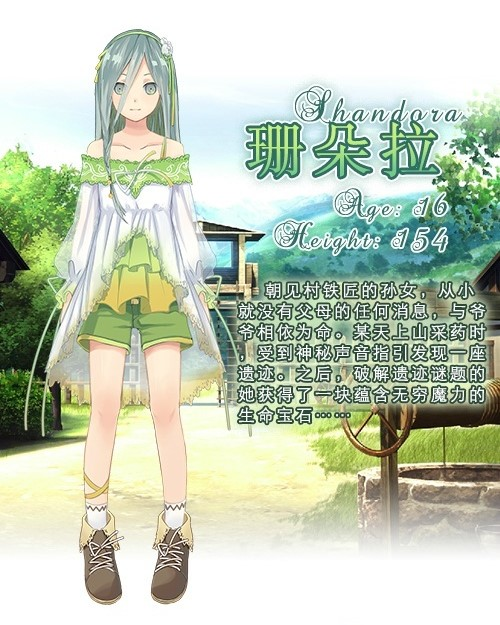
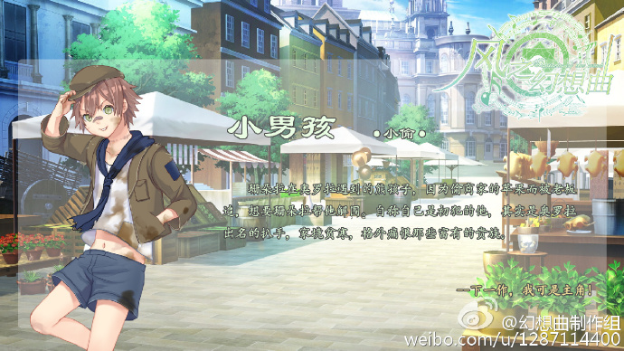
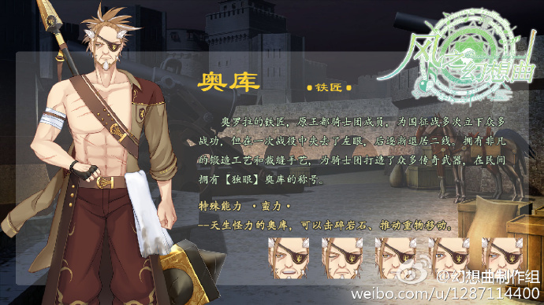
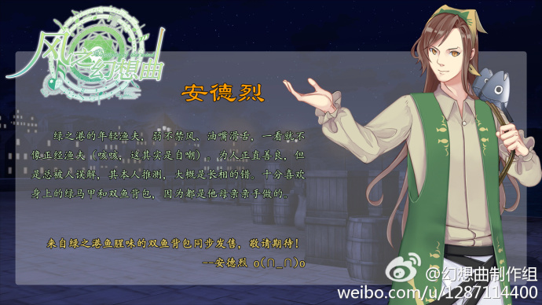
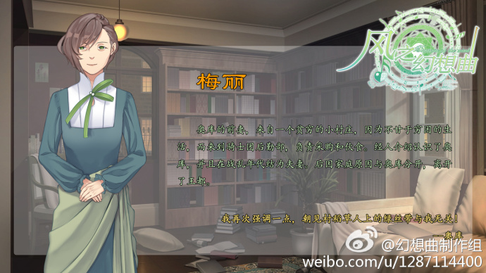
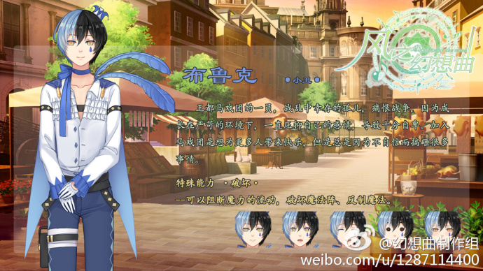

官方微博：http://weibo.com/u/1287114400?from=myfollow_group
|  |
朝见村铁匠的孙女，从小就没有父母的任何消息，与爷爷相依为命。 善良天真，不谙世事，从小被教导要做一个正直的人，所以做事有自己的原则。 本身经历过无数次轮回，所以略微有些面瘫（类似人偶），但是还是会有感情。 衣服绿色系，上衣关节出会有褶皱，领口和袖口有蕾丝边。灰色长发。 |
 |
朝见村的铁匠，原王都骑士团团长，生命宝石的持有者，后来将团长之位传给自己的儿子。 在王都叛乱之后，带着孙女珊朵拉隐居朝见村，并将生命宝石封印在神秘遗迹。 铁匠打扮，有一个黄色的破外套，铁匠打扮，上衣有个破旧的纹章，手持铁匠锤。 |
|  |
珊朵拉在奥罗拉遇到的熊孩子，因为偷商家的苹果而被老板追，偷苹果是因为要给铁匠·奥库谢礼。 家境贫寒，以种地为生，但是因为做不起农具被奥库资助（免费提供农具），想要答谢奥库。 告诉珊朵拉自己是初犯，只是为了给奥库谢礼。但其实是惯犯，奥罗拉的专业扒手，痛恨那些富有的人。 外貌淘气的熊孩子，破衣服破帽子。 |
|  |
原王都骑士团的骨干，拥有非凡的臂力，后来因为瞎了眼睛退至二线，有非凡的锻造工艺（和裁缝手艺）。 后来利用制造技术，为骑士团提供各种装备，很受骑士团团员的尊重，曾经是现任骑士团利维坦的老师。 为人正直，有谋略，一切以国家和集体荣誉为出发点，怠慢了自己的老婆和孩子，导致老婆孩子跑了。 人生的最后愿望是想要自己的家人理解原谅他。 外貌比较健壮，衣服上有略残破的骑士团纹章，一只眼睛上有眼罩（因为眼镜瞎了）。 武器是重锤，如果立绘上带武器的话，也需要出一张没有武器的立绘（跟家人谈判，不能带锤子吧）。 |
|  |
奥库与梅丽的孩子，在2岁的时候，梅丽带着他改嫁给绿之港的渔夫，从此过上了还算安定的生活。 本身对奥库是有误会的，梅丽虽然对奥库有怨念，但是在安德烈面前却描述他是一位优秀的人。 与渔夫父亲在绿之港开一家旅店，最近总觉得有人盯着他们，所以生意很少在做了，并且让梅丽隐藏起来。 渔夫父亲想要安德烈学习捕鱼技巧，但是略微体弱的安德烈学不来，所以主要是帮助父亲开旅馆。 比较会说话，在与珊朵拉相遇的时候，被误会为是想要泡她的坏人，但是真的是好心…… |
|  |
奥库的妻子，长得不是特别漂亮，穷人家的女儿，但是不甘于贫穷。 经介绍嫁给了当时还是骑士团成员的奥库，并且之后有了孩子，但是到孩子两岁，奥库就没回过家几次。 家庭逐渐变得拮据，梅丽终于不堪重负与孩子出走，在绿之港嫁给了一个渔夫，过上了安定的生活。 虽然对奥库有怨念，但是却没有真的恨过他，并且告诉自己的孩子，亲生父亲其实是很伟大的一个人。 |
|  |
王都马戏团的一员，战乱中幸存的孤儿，痛恨战争，因为成长在严苛的环境，一直压抑自己的感情，导致自卑。 比较苗条（瘦弱），加入马戏团是想给更多人带来快乐，但因为不自信达不到好效果，经常用赚来的钱救助贫困的孩子。 因为善良被女神赐予生命宝石，将里性格分离出来，从此拥有双重性格。表性格还是自卑（压抑里性格）。 里性格拥有各种欲望，腹黑、色欲、表现欲强、略奸诈，在马戏团表演时，布鲁克会让里性格表现出来（正好遇到女主）。 |